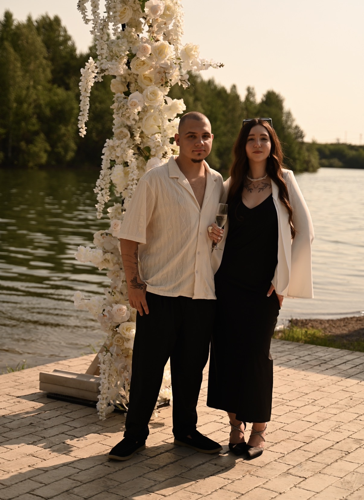
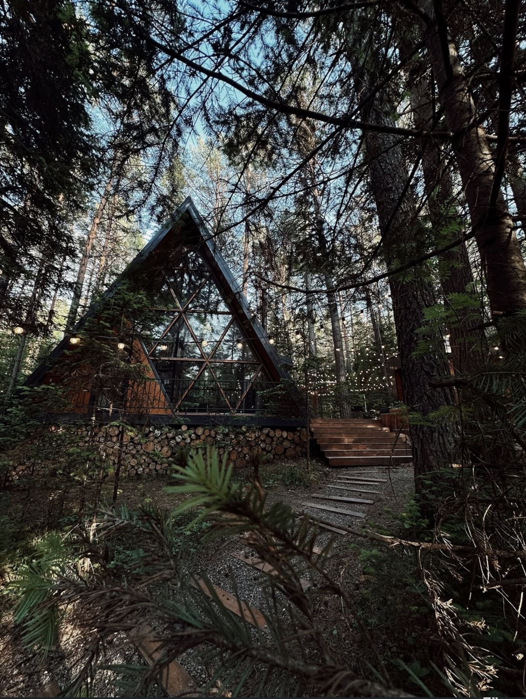
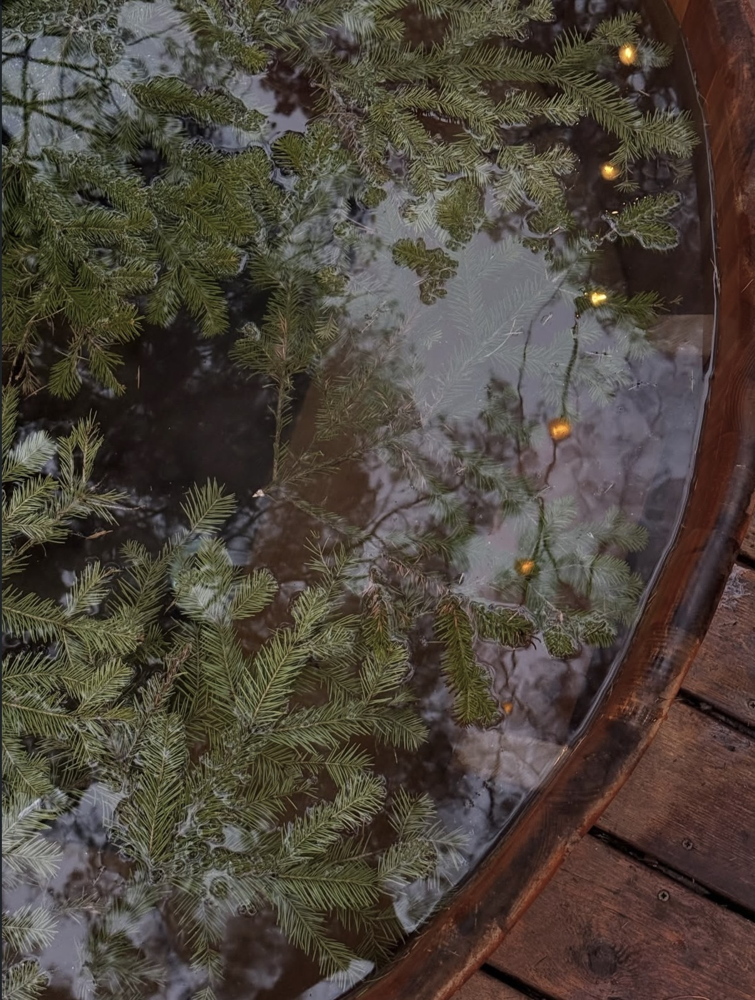

The Invitation
Save the Date


Любовь — это выбор, который мы делаем каждый день. И в этот особенный вечер мы скажем «да» друг другу перед теми, кто дорог нам больше всего.
Timing
Порядок торжественных мгновений
17:00
Сбор самых близких гостей
Приветственные напитки, объятия и атмосфера ожидания
17:30
Начало закрытого мероприятия
Торжественное начало нашего семейного праздника


Dress-code
Эстетика вашего образа
Smart Casual
Для нас бесконечно важен ваш личный комфорт. Мы будем искренне признательны, если вы разделите гармонию этого вечера, выбрав элегантный, свободный и непринужденный наряд в рамках заявленной концепции.
Спокойные оттенки благородной осени
Rsvp
Подтверждение присутствия